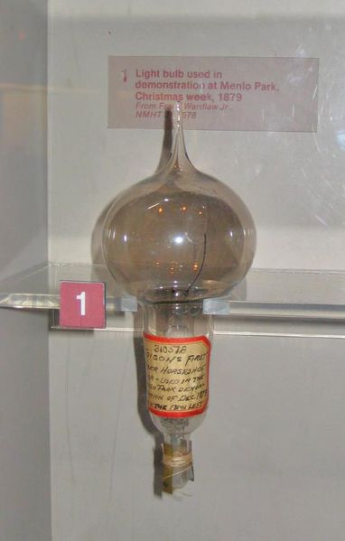
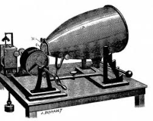
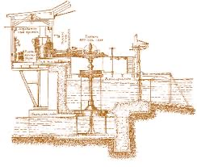

Винаходи Томаса Едісона
- Лампа розжарення (1879)
- Фонограф (1877)
- Мікрофон для телефону (1877)
- Диктофон (1878)
- Система розподілу електроенергії (1882)
-
Лампа розжарення (1879) — це електрична лампа, в якій світло утворюється шляхом нагрівання металевої нитки (зазвичай з вольфраму) до високої температури електричним струмом. Томас Едісон удосконалив конструкцію лампи, зробивши її довговічною та придатною для масового використання.

-
Фонограф (1877) — це пристрій для запису та відтворення звуку. Едісон створив перший практичний фонограф, який використовував циліндр з воском для запису звукових хвиль. Це був перший пристрій, який міг відтворювати звук, що був записаний раніше.
-
Мікрофон для телефону (1877) — це пристрій, який перетворює звукові хвилі в електричні сигнали. Едісон розробив мікрофон, який використовував вуглецевий елемент для підсилення звуку, що дозволило значно покращити якість телефонного зв'язку.
-
Диктофон (1878) — це пристрій для запису голосу. Едісон створив перший диктофон, який використовував тонкий металевий лист для запису звукових хвиль. Це дозволило людям записувати свої голоси та відтворювати їх пізніше.

-
истема розподілу електроенергії (1882) — це комплекс пристроїв і мереж для передачі електроенергії від електростанції до споживачів. Едісон створив першу у світі електростанцію та систему електропостачання, що дозволило забезпечити електроенергією цілі райони міст.
